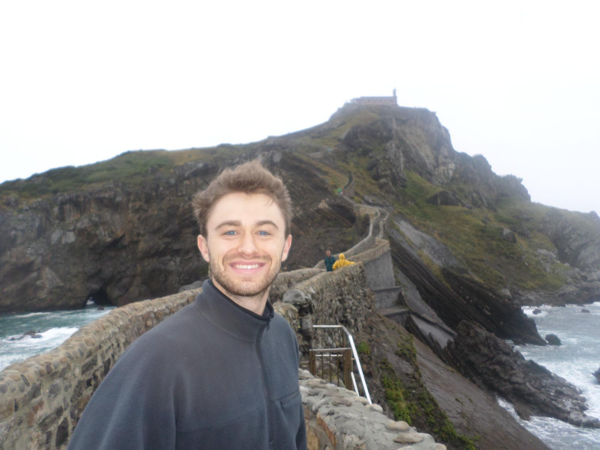
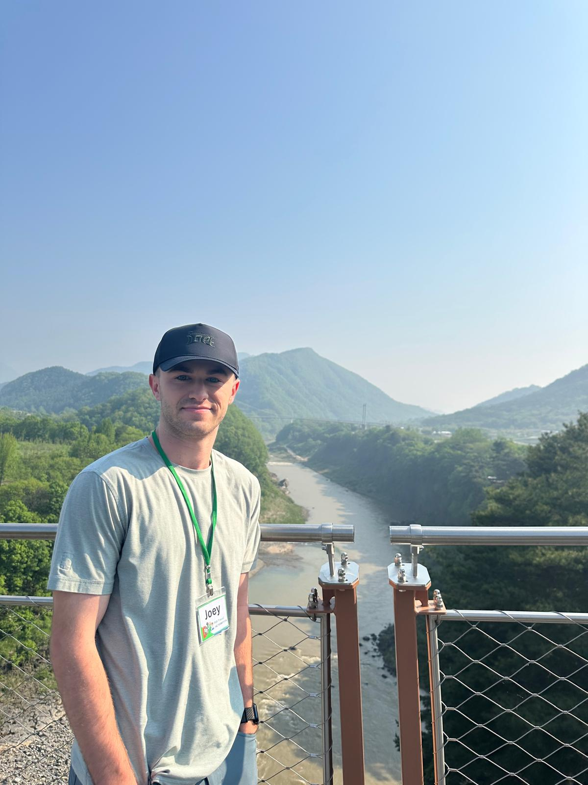

About Me
I recently graduated Summa Cum Laude from the DigiPen Institute of Technology in the Fall of 2025 where I obtained a Bachelor of Science in Computer Science in Real-Time Interactive Simulation and a minor in Mathematics. My academic focus emphasized solving problems that span multiple systems, writing code focused on performance, and implementing solutions under time constraints.
My primary interests are graphics programming, gameplay systems, and real-time simulation. I have worked extensively in C and C++. Additionally, I have experience in OpenGL and Vulkan, engine level systems spanning rendering, physics, AI behavior, and gameplay architecture. I enjoy working on problems that require careful reasoning and iteration.
Beyond game play systems and graphics, I am familiar with building systems across the stack, including engine tooling and scripting. I have used Unity, Unreal Engine, and Godot in project-based contexts, and have written Python in a machine learning setting. I have also used PowerShell and Bash to support build workflows and third-party library integration on a team project.
I consider myself a generalist with a strong foundation in real-time simulation—someone who is comfortable moving between disciplines and learning new technologies quickly. Overall, I love programming and am motivated by challenging problems, especially those that require performance, correctness, and creativity.

